전자기사 (2010-09-05 기출문제)
1과목: 전기자기학
1. 평면파 전파가 E=30cos(109t+20z)j[V/m]로 주어졌다면 이 전자파의 위상 속도는?
- 5×107[m/s]
- 1/3×108[m/s]
- 109[m/s]
- 3/2[m/s]
(정답률: 알수없음)

2. 공기 중에 있는 지름 6[cm]인 단일 도체구의 정전용량은 약 몇 [pF]인가?
- 0.33[pF]
- 0.67[pF]
- 3.3[pF]
- 6.7[pF]
(정답률: 알수없음)
3. 길이 ℓ[m], 단면적 지름 d[m]인 원통이 길이 방향으로 균일하게 자화되어 자화의 세기가 J[Wb/m2]인 경우 원통 양단에서의 전자극의 세기는?
- πd2J[wb]
- πdJ[wb]
- 4J/πd2[wb]
- πd2J/4[wb]
(정답률: 알수없음)
4. 주파수가 100[MHz]일 때 구리의 표피두께(skin depth)는 약 몇 [mm] 인가? (단, 구리의 도전율은 5.8×107 [℧/m], 비투자율은 1이다.)
- 3.3×10-2[mm]
- 6.61×10-2[mm]
- 3.3×10-3[mm]
- 6.61×10-3[mm]
(정답률: 알수없음)
5. 3개의 도체 a, b, c가 있다. 도체 c를 a로 정전차폐 했을 때의 조건은?
- a, b 사이의 유도계수는 0이다.
- b, c 사이의 유도계수는 0이다.
- b의 전하는 c의 전위와 관계가 있다.
- c의 전하는 b의 전위와 관계가 있다.
(정답률: 64%)
6. 지름이 40[mm] 원형 종이관에 일정하게 2000회의 코일이 감겨있는 솔레노이드의 인덕턴스는 약 몇 [mH] 인가? (단, 솔레노이드의 길이는 50[cm], 투자율은 [μ0]라 하며 누설자속은 없는 것으로 한다.)
- 12.6[mH]
- 25.2[mH]
- 50.4[mH]
- 75.6[mH]
(정답률: 알수없음)
7. 전기력선에 대한 설명 중 옳은 것은?
- 전기력선은 양전하에서 시작하여 음전하에서 끝난다.
- 전기력선은 전위가 낮은 점에서 높은 점으로 향한다.
- 전기력선의 방향은 그 점의 전계의 방향과 반대이다.
- 전계가 0이 아닌 곳에서 2개의 전기력선은 항상 교차한다.
(정답률: 알수없음)
8. 정전용량 2[μF]인 콘덴서를 충전하여 4[mH]인 코일을 통해서 방전할 때의 전기진동이 공간에 전파되는 경우 그 파장[m]은 약 얼마인가?
- 17[m]
- 170[m]
- 1.7×105[m]
- 3.4×105[m]
(정답률: 알수없음)
9. 사이클로트론에서 양자가 매초 3×1015개의 비율로 가속되어 나오고 있다. 양자가 15[MeV]의 에너지를 가지고 있다고 할 때, 이 사이클로트론은 가속용 고주파 전계를 만들기 위해서 150[kW]의 전력을 필요로 한다면 에너지 효율은?
- 2.8[%]
- 3.8[%]
- 4.8[%]
- 5.8[%]
(정답률: 알수없음)
10. x>0인 영역에 ε1=3인 유전체, x<0인 영역에 ε2=5인 유전체가 있다. 유전율 ε2인 영역에서 전계 E2=20ax +30ay - 40az[V/m]일 때, 유전율 ε2인 영역에서의 전계 E1은?
- 100/3ax +30ay - 40az[V/m]
- 20ax +90ay - 40az[V/m]
- 100ax +10ay - 40az[V/m]
- 60ax +30ay - 40az[V/m]
(정답률: 알수없음)
11. 맥스웰의 전자방정식에 대한 의미를 설명한 것으로 잘못된 것은?
- 자계의 회전은 전류밀도와 같다.
- 전계의 회전은 자속밀도의 시간적 감소율과 같다.
- 단위체적 당 발산 전속수는 단위체적 당의 공간전하 밀도와 같다.
- 자계는 발산하며, 자극은 단독으로 존재한다.
(정답률: 알수없음)
12. 질량(m)이 10-10[kg]이고, 전하량(q)이 10-8 [C]인 전하가 전기장에 의해 가속되어 운동하고 있다. 이 때 가속도 a=102i +102j[m/sec2]이라고 하면 전기장의 세기 E는?
- E=104i +105j [V/m]
- E=i+10j [V/m]
- E=i+j [V/m]
- E=10-6i+10-4j [V/m]
(정답률: 알수없음)
13. 그림과 같은 두개의 코일이 있을 때 L1=20[mH], L2=40[mH], 결합계수 k=0.5이다. 지금 이 두개의 코일을 직렬로 접속하여 0.5[A]의 전류를 흐릴 때 이 합성코일에 저축되는 에너지는 약 몇 [J] 인가?
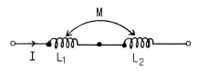
- 1.1×10-4[J]
- 2.2×10-4[J]
- 1.1×10-2[J]
- 2.2×10-2[J]
(정답률: 알수없음)
14. 원형코일의 전류 중심으로부터 r[m]인 점의 자위는? (단, ω는 점 p로부터 원형코일의 전류를 바라보는 입체각이다.)
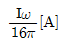
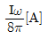
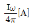
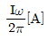
(정답률: 37%)
15. 1[kV]로 충전된 콘덴서의 정전에너지가 1[J]일 때 이 콘덴서의 정전용량[μF]은?
- 1[μF]
- 2[μF]
- 3[μF]
- 4[μF]
(정답률: 알수없음)
16. 두 종류의 금속을 루프상으로 이어서 두 접속점을 다른 온도로 유지해 줄 때, 이 회로에 전류가 흐르는 효과는?
- 지벡(Seebeck) 효과
- 톰슨(Thomson) 효과
- 펠티에(Peltier) 효과
- 홀(Hall) 효과
(정답률: 알수없음)
17. 진공내에서 전위함수 V=x2+y2[V]로 주어질 때, 0≤x≤1, 0≤y≤1, 0≤z≤1인 공간에 저축되는 에너지는?
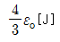
- 4ɛ0
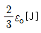
- 2ɛ0
(정답률: 알수없음)
18. 전기회로와 비교할 때 자기회로의 특징이 아닌 것은?
- 기자력과 자속은 변화가 비직선성이다.
- 공기에 대한 누설자속이 많다.
- 자기회로는 정전용량과 같은 회로 요소는 없다.
- 자속의 변화에 따른 자기 저항내의 줄 손실이 없다.
(정답률: 알수없음)
19. 권수 500[회], 길이 5[cm]인 솔레노이드에 10[mA]의 전류가 흐른다면 이 솔레노이드에 발생되는 자계의 세기는?
- 50[AT/m]
- 100[AT/m]
- 150[AT/m]
- 200[AT/m]
(정답률: 알수없음)
20. 전계성분과 자계성분의 크기의 비를 고유임피던스 또는 파동임피던스라 한다. 진공일 경우 고유임피던스는?
- 377[Ω]
- 4π×10-7[Ω]
- 390[Ω]
- 3×108[Ω]
(정답률: 알수없음)
2과목: 회로이론
21. 시간 t에 대하여 다음과 같은 파형의 전류가 20[Ω] 저항에 흐를 때, 소비전력이 100[W]이다. 이 전류를 가동코일형 계기로 측정하면 약 몇 [A]를 나타내겠는가?
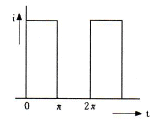
- 0.79[A]
- 1.58[A]
- 2.24[A]
- 3.16[A]
(정답률: 10%)
22. 다음 그림과 쌍대가 되는 회로는?
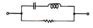
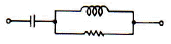
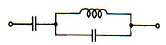
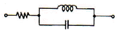
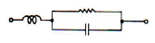
(정답률: 알수없음)
23. 시정수 T인 RL 직렬회로에 t=0에서 직류전압을 가하였을 때 t=4T에서의 회로 전류는 정상치의 몇 [%] 인가?
- 63[%]
- 86[%]
- 95[%]
- 98[%]
(정답률: 알수없음)
24. 그림과 같은 주기성을 갖는 구형파 교류 전류의 실효치는?
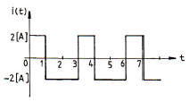
- 2[A]
- 4[A]
- 3[A]
- √2[A]
(정답률: 알수없음)
25. 2개 이상의 전원을 내포한 선형 회로에서 어떤 가지에 흐르는 전류나 단자의 전압에 대해 해석하는데 사용하는 것은?
- Norton의 정리
- Thevenin의 정리
- 치환정리
- 중첩의 원리
(정답률: 알수없음)
26. RL 직렬회로에 일정한 정현파 전압을 인가하였다. 이때 인덕터의 양단 전압을 측정하였을 경우에 나타나는 현상은?
- 신호원의 전압과 위상이 동일한 형태로 나타난다.
- 저항양단 전압보다 90°만큼 앞선 위상이 나타난다.
- 인덕터 전류와 위상이 동일한 형태로 나타난다.
- 신호원 전압보다 90°만큼 앞선 위상이 나타난다.
(정답률: 알수없음)
27. 그림과 같은 삼각파의 파고율은?
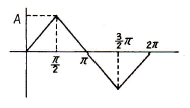
- 1.15
- 1.73
- 1
- 1.41
(정답률: 알수없음)
28. 다음 그림과 같은 이상 변압기의 권선비는?
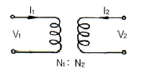
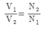
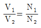
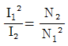
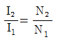
(정답률: 30%)
29. RLC 병렬회로가 공진주파수보다 큰 주파수 영역에서 동작할 때, 이 회로는?
- 유도성 회로가 된다.
- 용량성 회로가 된다.
- 저항성 회로가 된다.
- 탱크 회로가 된다.
(정답률: 알수없음)
30. 다음과 같은 회로에 100[V]의 전압을 인가하였다. 최대전력이 되기 위한 용량성 리액턴스 XC 값은?
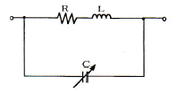
- 12[Ω]
- 12.5[Ω]
- 15[Ω]
- 25[Ω]
(정답률: 알수없음)
31. 인덕턴스 L1, L2가 각각 2[mH], 4[mH]인 두 코일간의 상호 인덕턴스 M이 4[mH]라고 하면 결합계수 K는?
- 1.41
- 1.54
- 1.66
- 2.47
(정답률: 알수없음)
32. 어떤 성형시스템의 전달함수가 다음과 같을 때, 이 시스템의 단위계단응답(unit-step response)은?
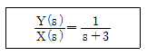
- e3tu(t)
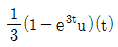
- e-3tu(t)
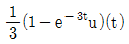
(정답률: 알수없음)
33. 정현 대칭에서 성립하는 함수식은?
- f(t) = f(t)
- f(t) = -f(t)
- f(t) = f(-t)
- f(t) = -f(-t)
(정답률: 알수없음)
34. 정현파 전압의 진폭이 Vm이라면 이를 반파정류 했을 때의 평균값은?
- Vm/2
- Vm/√2
- Vm/π
- 2Vm/π
(정답률: 알수없음)
35. 다음 그림의 라플라스(Laplace) 변환은?
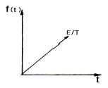
- E/s2
- E/Ts
- E/Ts2
- TE/s
(정답률: 62%)
36. 다음 그림의 회로에서 단자 a, b 간의 전압은?
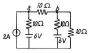
- 0.116[V]
- 1.16[V]
- 11.6[V]
- 116[V]
(정답률: 알수없음)
37. R=80[Ω], XL=60[Ω]인 R-L 병렬회로에서 V=220∠45°[V]의 전압을 가했을 때, 코일 L에 흐르는 전류는?
- 3.67∠45°[A]
- 3.67∠-45°[A]
- 5.75∠90°[A]
- 5.75∠-90°[A]
(정답률: 60%)
38. 20[μF]의 콘덴서에 100[V], 50[Hz]의 교류전압을 가할 때의 무효전력은?
- -10π[Var]
- -20π[Var]
- -30π[Var]
- -40π[Var]
(정답률: 55%)
39. 다음 회로에서 결합계수가 K일 때, 상호 인덕턴스 M은?
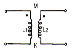
- M=K√L1L2
- M=/√L1L2
- M=KL1L2
- M=K/(L1L2)
(정답률: 알수없음)
40. 다음 회로의 전달 함수는?
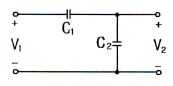
- C1+C2
- 1/C1+C2
- 1/C1+1/C2
- C1/C1+C2
(정답률: 알수없음)
3과목: 전자회로
41. 다음 연산 증폭기(Op-Amp) 회로에서 출력 전압은? (단, R1=1[kΩ], R2=5[kΩ], V1=4[V], V2=3[V])
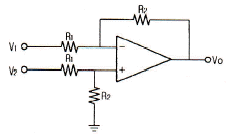
- -5[V]
- -7[V]
- -11[V]
- -12[V]
(정답률: 알수없음)
42. 수정발진기의 주파수 변동 원인과 그 대책에 대한 설명으로 틀린 것은?
- 동조점의 불안정 : Q가 작은 수정공진자 사용
- 주위온도의 변화 : 항온조 사용
- 부하의 변동 : 완충 증폭기 사용
- 전원전압의 변동 : 정전압회로 사용
(정답률: 알수없음)
43. 다음 논리 게이트 중 Fan-out이 가장 큰 것은?
- RTL(Register-Transistor-Logic) 게이트
- TTL(Transistor-Transistor-Logic) 게이트
- DTL(Diode-Transistor-Logic) 게이트
- DL(Diode-Logic) 게이트
(정답률: 알수없음)
44. 다음 회로의 출력 Y에 대한 논리식은?
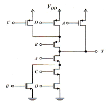
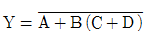
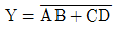
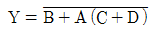
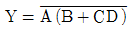
(정답률: 알수없음)
45. 다음 회로의 명칭으로 가장 적합한 것은?
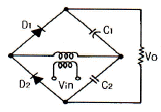
- 평형 변조회로
- 전파 정류회로
- 배전압 정류회로
- 반파 정류회로
(정답률: 알수없음)
46. 교류 전압에 직류 레벨을 더하는 회로는?
- 클리퍼
- 클램퍼
- 리미터
- 필터
(정답률: 알수없음)
47. 고주파 증폭기에서 α차단 주파수에 대한 설명으로 옳은 것은?
- α가 최대값의 0.5 되는 곳의 주파수이다.
- α가 최대값의 0.707 되는 곳의 주파수이다.
- 출력 전력이 원래값의 1/5로 되는 곳의 주파수이다.
- 출력 전력이 원래값의 1/√2로 되는 곳의 주파수이다.
(정답률: 알수없음)
48. A급 증폭기의 최대 효율은? (단, 병렬 부하인 경우임)
- 20[%]
- 30[%]
- 40[%]
- 50[%]
(정답률: 알수없음)
49. FET가 보통의 접합 트랜지스터에 대해 갖는 장점이 아닌 것은?
- 입력 임피던스가 크다.
- 진공관이나 트랜지스터에 비하여 잡음이 적다.
- 이득×대역폭이 커서 고주파에서도 사용하기 쉽다.
- 오프셋 전압이 없으므로 좋은 초퍼로서 사용할 수 있다.
(정답률: 알수없음)
50. 다음 회로의 명칭으로 가장 적합한 것은?
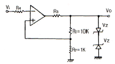
- Schmitt 트리거 회로
- 톱니파발생 회로
- Monostable 회로
- Astable 회로
(정답률: 알수없음)
51. MOSFET의 채널은 어느 단자 사이에 형성되는가?
- 입력과 출력 사이
- 게이트와 소스 사이
- 드레인과 소스 사이
- 게이트와 드레인 사이
(정답률: 알수없음)
52. mod-12 존슨 카운터를 설계하기 위하여 최소 필요한 플립플롭의 수는?
- 4개
- 6개
- 12개
- 24개
(정답률: 알수없음)
53. B급 푸시풀(Push-Pull) 증폭기의 특징이 아닌 것은?
- 차단 상태 부근에 바이어스 되어 있다.
- 트랜지스터의 비선형 특성에서 오는 일그러짐이 증가한다.
- 우수 고조파가 상쇄되어 일그러짐이 적다.
- B급이나 AB급으로 동작시킨다.
(정답률: 20%)
54. 베이스 접지 증폭회로에 대한 설명으로 틀린 것은?
- 고주파수 특성이 양호하다.
- 입출력 위상은 동위상이다.
- 입력저항은 수십[Ω] 정도로 작다.
- 전류 증폭도가 수십~수백으로 크다.
(정답률: 알수없음)
55. 트랜지스터를 베이스 접지에서 이미터 접지로 했더니 ICEO가 50배가 되었다. 트랜지스터의 β는?
- 49
- 50
- 59
- 120
(정답률: 24%)
56. 궤환에 관한 설명으로 틀린 것은?
- 궤환된 신호와 본래의 입력과의 위상관계에 있어서 역위상 경우를 부궤환이라 한다.
- 궤환전압이 출력전류에 비례할 때를 전류궤환이라 한다.
- 궤환전압이 출력전류에 비례하는 경우를 직렬궤환이라 한다.
- 직렬궤환과 병렬궤환이 함께 사용된 것을 복합궤환이라 한다.
(정답률: 67%)
57. 다음 회로에서 Voi는 연산 증폭기의 입력 직류 오프셋 전압이다. 직류 출력 오프셋 전압 Vos는?
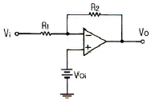
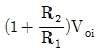
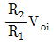
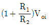
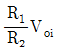
(정답률: 알수없음)
58. 다음 회로는 어떤 궤환 증폭회로인가?
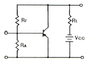
- 전류궤환 증폭회로
- 전압궤환 증폭회로
- 정전류궤환 증폭회로
- 정전압궤환 증폭회로
(정답률: 알수없음)
59. 다음 그림은 연산 증폭기이다. V1=2[V], V2=3[V]이면, 출력 Vo는?
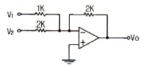
- -5[V]
- -6[V]
- -7[V]
- -8[V]
(정답률: 알수없음)
60. 전가산기를 구성할 때 필요한 게이트는?
- XOR 2개, AND 2개, OR 1개
- XOR 2개, AND 1개, OR 2개
- XOR 1개, AND 2개, OR 2개
- XOR 2개, AND 2개, OR 2개
(정답률: 알수없음)
4과목: 물리전자공학
61. FET가 초퍼(Chopper)로 적합한 가장 큰 이유는?
- 전력 소모가 적기 때문
- 대량 생산에 적합하기 때문
- 입력 임피던스가 매우 높기 때문
- 오프셋 전압이 매우 작기 때문
(정답률: 알수없음)
62. 100[V] 전압으로 가속된 전자속도는 25[V]의 전압으로 가속된 전자속도의 몇 배인가?
- √2
- 2
- 5
- 5√2
(정답률: 알수없음)
63. 고속의 전자(이온)가 금속의 표면에 충돌하면 금속 안의 자유전자가 방출되는 현상은?
- 전계 방출
- 열전자 방출
- 광전자 방출
- 2차 전자 방출
(정답률: 알수없음)
64. 전자 수가 32인 원자의 가전자 수는?
- 2개
- 4개
- 8개
- 18개
(정답률: 30%)
65. n채널 전계 효과 트랜지스터에 흐르는 전류는 주로 어느 현상에 의한 것이다.
- 전자의 확산 현상
- 전공의 확산 현상
- 정공의 드리프트 현상
- 전자의 드리프트 현상
(정답률: 알수없음)
66. 일정한 온도에서 n형 반도체의 도너 불순물 밀도를 증가시키면 페르미 준위는?
- 전도대 쪽으로 접근한다.
- 충만대 쪽으로 접근한다.
- 금지대 중앙에 위치한다.
- 가전자대 쪽으로 접근한다.
(정답률: 알수없음)
67. 실리콘 단결정 반도체에서 P형 불순물을 사용될 수 있는 것은?
- P(인)
- As(비소)
- B(붕소)
- Sb(안티몬)
(정답률: 알수없음)
68. Pauli의 배타율 원리에 대한 설명으로 틀린 것은?
- 원자내의 전자 배열을 지배하는 원리이다.
- 원자내에서 두 개의 전자가 동일한 양자 상태에 있을 수 있다.
- 하나의 양자 궤도에 spin이 다른 두 개의 전자가 존재할 수 있다.
- 원자내에 존재하는 어떠한 전자도 네 개의 양자수를 같게 취할 수 없다.
(정답률: 알수없음)
69. 금소의 일함수에 대한 설명으로 틀린 것은?
- 전자방출에 필요한 에너지를 일함수라 한다.
- 일함수가 큰 물질일수록 열전자의 방출성이 우수하다.
- 금속 중에는 비교적 자유로이 움직이는 다수의 자유전자가 있다.
- 자유전자는 외부에서 에너지를 가하지 않으면 금속표면에서 튀어나갈 수 없다.
(정답률: 알수없음)
70. 터널 다이오드가 부성 저항 영역을 갖는 이유는?
- PN 접합의 용량변화 때문에
- PN의 높은 불순물 농도 때문에
- PN 접합의 줄 열 때문에
- PN 양단의 온도에 따른 팽창 때문에
(정답률: 알수없음)
71. 이동도(mobility)에 관한 설명으로 틀린 것은?
- 이동도의 단위는 [m2/Vㆍs]이다.
- 도전율이 크면 이동도도 크다.
- 온도가 증가하면 이동도는 증가한다.
- 반도체에서 전자의 이동도는 정공의 이동도보다 크다.
(정답률: 알수없음)
72. 25[℃]에서 8.2[V]인 제너 다이오드가 0.⑤[%/℃]의 온도계수를 가질 때 60[℃]에서의 제너 전압은?
- 8.06[V]
- 8.17[V]
- 8.34[V]
- 8.42[V]
(정답률: 알수없음)
73. 1[eV]를 가장 잘 설명한 것은?
- 1개의 전자가 1[J]의 에너지를 얻는데 필요한 에너지이다.
- 1개의 전자가 1[m]의 간격을 통과할 때 필요한 전압이다.
- 1개의 전자가 1[V]의 전위차를 통과할 때 필요한 운동 에너지이다.
- 1개의 전자가 1[m/sec]의 속도를 얻는데 필요한 에너지이다.
(정답률: 알수없음)
74. FET에서 차단주파수 fT를 높이는 방법으로 틀린 것은?
- gm을 크게 한다.
- n 채널을 사용한다.
- 채널 길이를 길게 한다.
- 정전용량을 적게 한다.
(정답률: 알수없음)
75. 핀치 오프 전압이 -4[V]이고, VGS=0일 때 드레인 전류(IDSS)가 8[mA]인 JFET에서 VGS=-1.8[V]일 때 드레인 전류는?
- 2.4[mA]
- 3.2[mA]
- 3.9[mA]
- 4.3[mA]
(정답률: 알수없음)
76. 컬렉터 접합부의 온도 상승으로 인하여 트랜지스터가 파괴되는 현상은?
- 얼리 현상
- 항복 현상
- 열폭주 현상
- 펀치스로우 현상
(정답률: 55%)
77. 진성반도체에 있어서 전도대의 전자밀도 n은 에너지 gap Eg의 크기에 따라 변한다. 다음 중 옳은 것은?
- n은 Eg의 증가에 지수 함수적으로 증가한다.
- n은 Eg의 증가에 지수 함수적으로 감소한다.
- n은 Eg에 반비례한다.
- n은 Eg에 비례한다.
(정답률: 알수없음)
78. 빛의 파장이 4.5×10-10 [m]일 때 광자의 에너지는? (단, 플랑크상수는 6.6×10-34[Jㆍs]이다.)
- 1.5×10-16[J]
- 2.2×10-16[J]
- 3.9×10-16[J]
- 4.4×10-16[J]
(정답률: 알수없음)
79. 어떤 도체의 단면을 1[A]의 전류가 흐를 때, 이 단면을 0.01초 동안에 통과하는 전자수는?
- 6.25×1016 [개]
- 6.25×1018 [개]
- 6.25×1020 [개]
- 6.25×1022 [개]
(정답률: 알수없음)
80. 진성반도체의 페르미 준위는?
- 온도에 따라 변화하지 않는다.
- 온도가 감소하면 전도대로 향한다.
- 온도가 감소하면 충만대로 향한다.
- 온도가 감소하면 가전대로 향한다.
(정답률: 알수없음)
5과목: 전자계산기일반
81. 데이터의 순환적 구조와 관계가 깊은 리스트는?
- 단순 연결 리스트(singly linked list)
- 이중 연결 리스트(doubly linked list)
- 다중 연결 리스트(multi linked list)
- 환형 연결 리스트(circular linked list)
(정답률: 알수없음)
82. 가상기억장치(Virtual Memory System)를 도입함으로써 기대할 수 있는 장점이 아닌 것은?
- Binding Time을 늦추어서 프로그램의 Relocation을 용이하게 쓴다.
- 일반적으로 가상기억장치를 채택하지 않는 시스템에서의 실행속도보다 빠르다.
- 실제 기억용량보다 큰 가상공간(Virtual Space)을 사용자가 쓸 수 있다.
- 오버레이(Overlay) 문제가 자동적으로 해결된다.
(정답률: 알수없음)
83. 다음 설명에 해당하는 용어는?
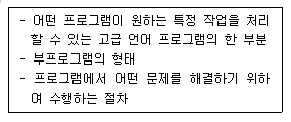
- PROCEDURE
- LIBRARY 함수
- FUNCTION SUBPROGRAM
- SUBROUTINE SUBPROGRAM
(정답률: 알수없음)
84. 단항(unary) 연산에 해당되지 않는 것은?
- move
- compare
- clear
- shift
(정답률: 알수없음)
85. 다음 C언어 프로그램을 수행하고 난 후의 결과값으로 옳은 것은?
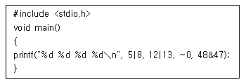
- 13 13 -1 32
- 13 25 0 95
- 13 14 -1 95
- 14 13 0 95
(정답률: 알수없음)
86. 인터럽트(interrupt)의 발생 원인으로 옳지 않은 것은?
- 부 프로그램 호출
- 오퍼레이터에 의한 동작
- 불법적인 인스트럭션(instruction)의 수행
- 정전 또는 자료 전달 과정에서 오류 발생
(정답률: 알수없음)
87. 하드 와이어드(hard wired) 방식이 마이크로 프로그래밍 방식보다 좋은 점은?
- 컴퓨터의 속도가 향상된다.
- 다양한 번지 모드를 갖는다.
- 인스트럭션 세트를 변경하기가 쉽다.
- 비교적 복잡한 명령 세트를 가진 시스템에 적합하다.
(정답률: 알수없음)
88. 디스크에 헤드가 가까울수록 불순물이나 결함에 의한 오류 발생의 위험이 더 크다. 이러한 문제점을 해결한 것은?
- 윈체스터 디스크
- 이동 디스크
- 콤팩트 디스크
- 플로피 디스크
(정답률: 알수없음)
89. 다음은 0-주소 명령어 방식으로 이루어진 프로그램이다. 레지스터 X의 내용은? (단, 레지스터 A=1, B=2, C=3, D=3, E=2이며, ADD는 덧셈 명령어, MUL은 곱셈 명령어이다.)
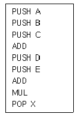
- 15
- 20
- 25
- 30
(정답률: 알수없음)
90. 다음 명령어의 형식에 대한 설명 중 옳지 않은 것은?
- 3-주소 명령어 형식은 3개의 자료 필드를 갖고 있다.
- 2-주소 명령어 형식에서는 연산 후에도 원래 입력 자료가 항상 보존된다.
- 1-주소 명령어 형식에서는 연산 결과가 항상 누산기(accumulator)에 기억된다.
- 0-주소 명령어 형식을 사용하는 컴퓨터는 일반적으로 스택(stack)을 갖고 있다.
(정답률: 알수없음)
91. CPU가 입출력 장치에 접근하는 방식의 설명으로 틀린 것은?
- CPU가 입출력 장치를 메모리의 일부로 취급하여 접근하는 방식을 메모리 맵 I/O 방식이라 한다.
- 메모리 맵 I/O 방식을 구성할 때는 필수적으로 입출력 요구선(IORQ)을 사용하여야 한다.
- 8080이나 Z80 시스템은 원칙적으로 I/O 맵 I/O 방식을 사용하게 되어 있다.
- I/O 맵 I/O 방식에서는 별도의 입출력 명령을 사용하여야 한다.
(정답률: 알수없음)
92. 다음 불 대수 중 옳지 않은 것은?
- A+0 = A
- AㆍA = 1
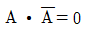
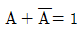
(정답률: 알수없음)
93. 컴퓨터에서 사용되는 인스트럭션(Instruction)의 기능으로 분류할 때 해당되지 않는 것은?
- 함수연산 기능(Function Operation)
- 전달 기능(Transfer Operation)
- 입출력 기능(Input Output Operation)
- 처리 기능(Process Operation)
(정답률: 알수없음)
94. 언어를 번역하는 번역기가 아닌 것은?
- assembler
- interpreter
- compiler
- Linkage editor
(정답률: 알수없음)
95. 중앙처리장치의 구성이 아닌 것은?
- 제어장치
- 산술 및 논리연산 장치
- 레지스터
- 출력장치
(정답률: 알수없음)
96. 캐시(cache) 메모리에 대한 설명으로 옳은 것은?
- 중앙처리장치와 주기억장치 사이의 속도차를 해결하는 것이다.
- 중앙처리장치와 보조기억장치 사이의 속도차를 해결하는 것이다.
- 중앙처리장치와 입출력장치 사이의 속도차를 해결하는 것이다.
- 주기억장치의 보조기억매체이다.
(정답률: 알수없음)
97. 주소지정방식에 대한 설명으로 틀린 것은?
- register address mode : 명령의 주소 부분의 값은 중앙처리장치내의 register이다.
- immediate address mode : 명령의 주소 부분이 그대로 유효주소이다.
- relative address mode : 프로그램 카운터의 내용이 주소부분과 더해져서 유효주소가 된다.
- indexed address mode : index register 내용이 주소부분과 더해져서 유효주소가 된다.
(정답률: 알수없음)
98. 자료를 추출하고 그에 의거한 보고서를 작성하는데 사용하는 가장 적합한 프로그래밍 언어는?
- C
- java
- perl
- HTML
(정답률: 알수없음)
99. 숫자를 EBCDIC 코드로 표현할 때 0~9까지의 수에서 앞의 4비트(존 비트) 표시형태는?
- 1111
- 0000
- 0011
- 1010
(정답률: 31%)
100. CPU내 여러 장치들의 가장 일반적인 연결 방법은?
- 버스
- 직접 연결
- 간접 연결
- 직ㆍ간접 혼용
(정답률: 알수없음)
주어진 전자파의 진동수는 10^9이므로 w=2πf=2π×10^9이다. 파장수는 전자파의 파장이 주어지지 않았으므로 구할 수 없다.
하지만, 전자파의 주파수가 매우 높기 때문에 파장이 매우 짧다고 가정할 수 있다. 이 경우, 파장수는 전자파가 진행하는 방향으로 한 파장에 해당하는 거리이므로, 파장수는 1/λ이 된다.
따라서 위상 속도는 w/k = (2π×10^9)/(2π/λ) = 10^9×λ이 된다. 이때, λ가 매우 짧다고 가정하면, 위상 속도는 약 5×10^7[m/s]가 된다.
따라서 정답은 "5×10^7[m/s]"이다.